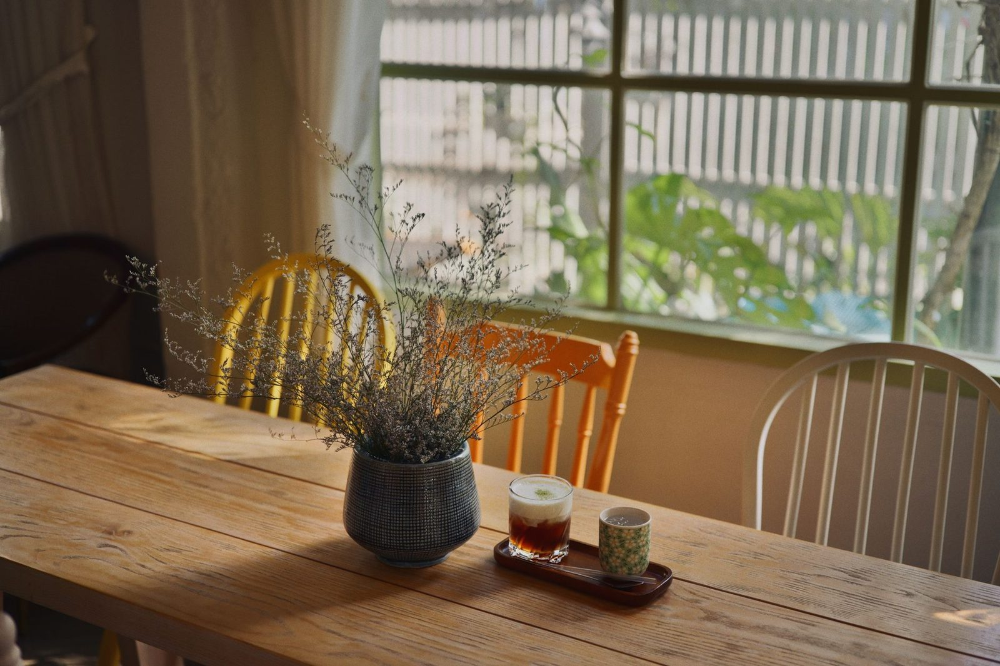

The Miami kitchen
A Refresh that reads like a full reno — new doors, stone and lighting around the bones that were already good. The lavender was there at handover; the light does the rest.
Handover days we remember
Four recent projects across the southern Gold Coast — with the package each family chose and the weeks the schedule spent taped to their fridge.

A Refresh that reads like a full reno — new doors, stone and lighting around the bones that were already good. The lavender was there at handover; the light does the rest.

Full Reno, wall to wall — pale timber, a white island the kids now do homework on, and a walk-in pantry where the old laundry door used to be.
The 1990s kitchen from our front page, shown honestly: day zero next to week three. Same room, same windows — different life.


Not every project is a whole kitchen. This one was a breakfast nook carved out of a dead corner — bench seat, round table, morning sun. The quote was drawn at this exact table.
Spring build slots open
Book the in-home design visit — 90 minutes, your bench, your budget. The visit fee is credited in full when you go ahead.